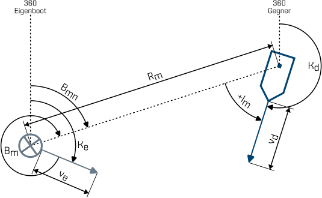

WO-Trainer Uboote HILFE
Der Gegnerkurs $\mathrm{K_d}$ ist eine geometrische Größe in der Lagebilderstellung. In den Aufgaben dieses Abschnittes werden Sie die Grundlagen zur Berechnung des Gegnerkurses kennenlernen. In folgender Abbildung sind alle geometrischen Größen des Lagebildaufbaus einmal illustriert. Beginnen Sie bereits jetzt die Formelzeichen zu verinnerlichen. Das wird Ihnen das Bearbeiten von weiterführenden Aufgaben deutlich erleichtern.

Abbildung 1: Sie sehen das Eigenboot (grau) sowie einen Gegner (blau). Der Eigenkurs $\mathrm{K_e}$ und die Eigenfahrt $\mathrm{v_e}$ werden durch den Fahrtvektor dargestellt. Dies verhält sich identisch mit dem Gegnerkurs $\mathrm{K_d}$ sowie der Gegnerfahrt $\mathrm{v_d}$. Weiterhin beschreibt $\mathrm{B_{mn}}$ die rechtweisende Peilung, die der Gegner von Eigenboot aus betrachtet einnimmt. Die Schiffsseitenpeilung $\mathrm{B_m}$ hingegen wird von einem Uboot immer in 360° um das Eigenboot angegeben. Ein Gegner in 350° befindet sich dementsprechen in Backbord 1 Dez. Beim Lagewinkel $\mathrm{I_m}$ ist zu beachten, dass Fahrzeuge mit Bug rechts immer ein positiven $\mathrm{I_m}$ und Fahrzeuge mit Bug links immer ein negatives $\mathrm{I_m}$ haben. Der aktuelle Abstand zwischen dem Eigenboot und dem Gegner heißt $\mathrm{R_m}$